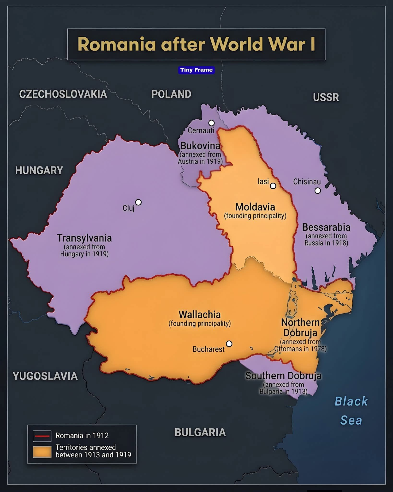
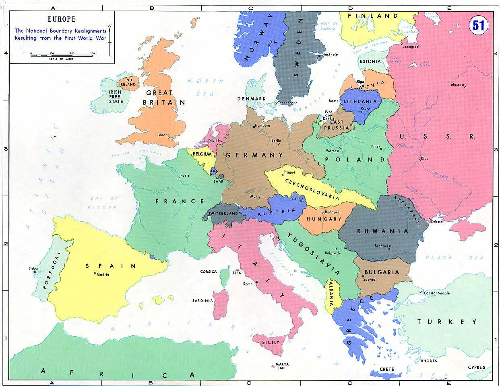
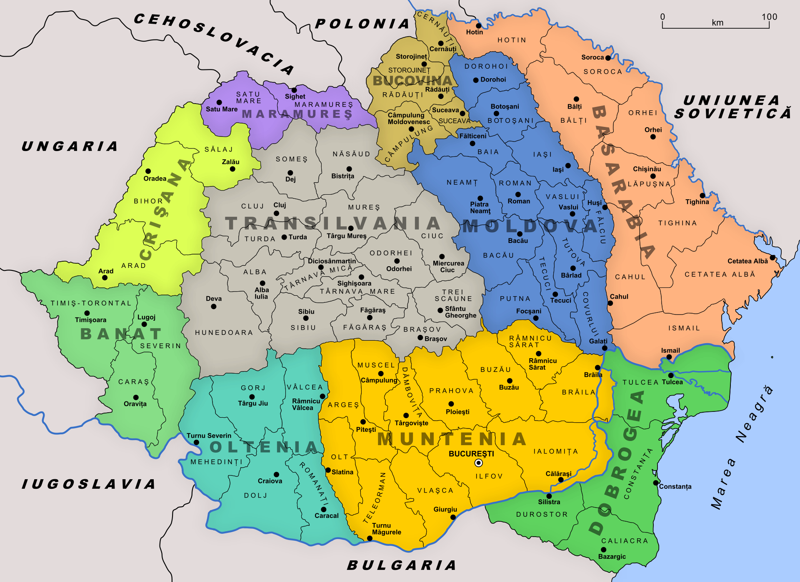
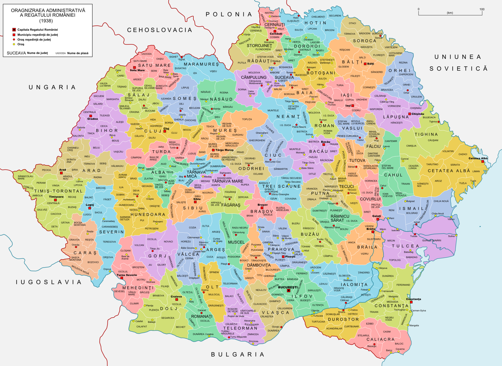
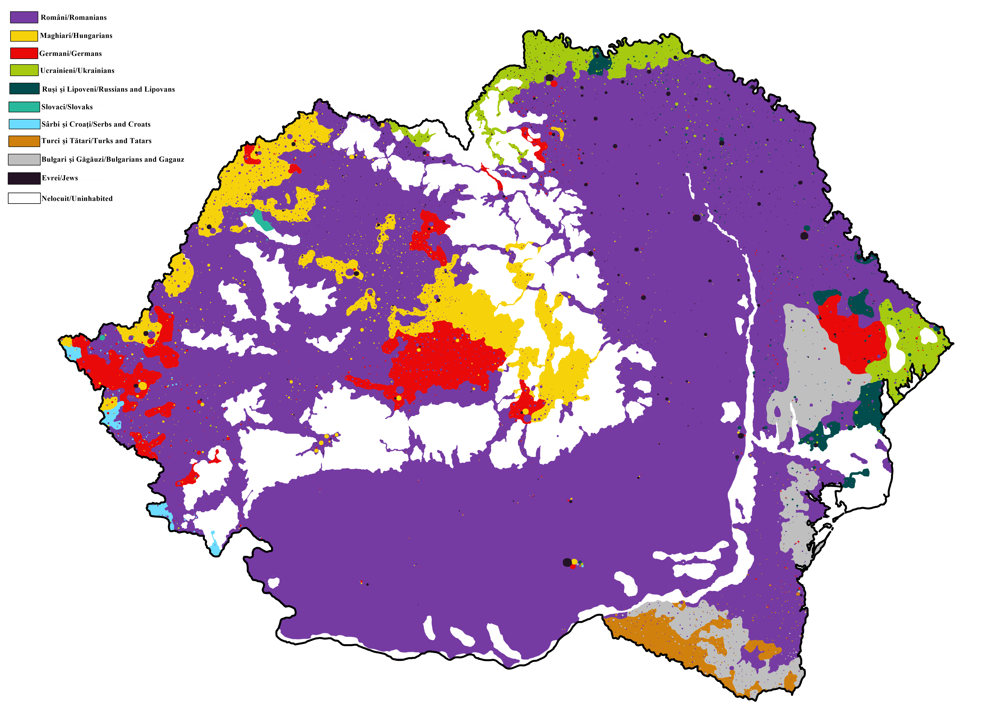
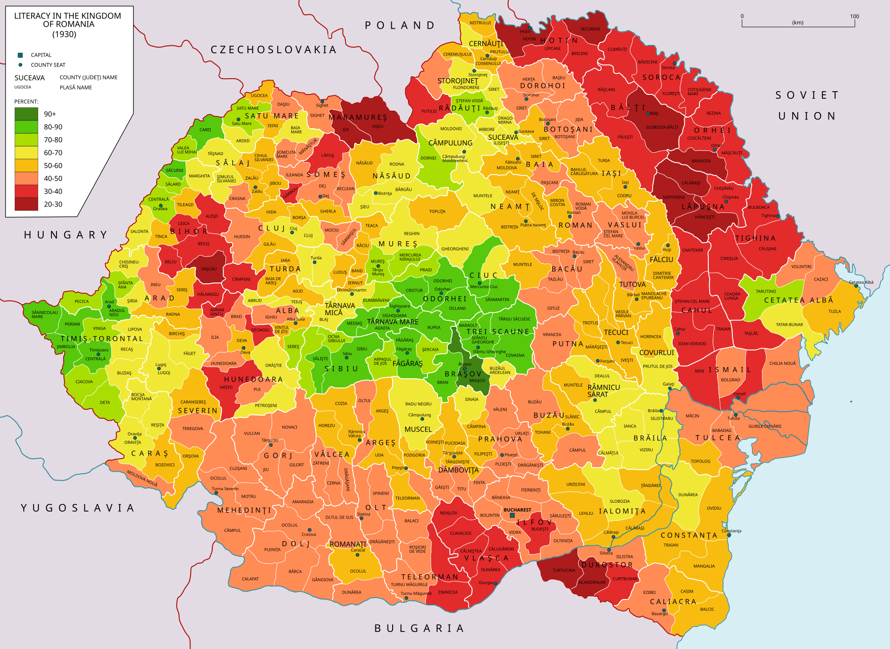
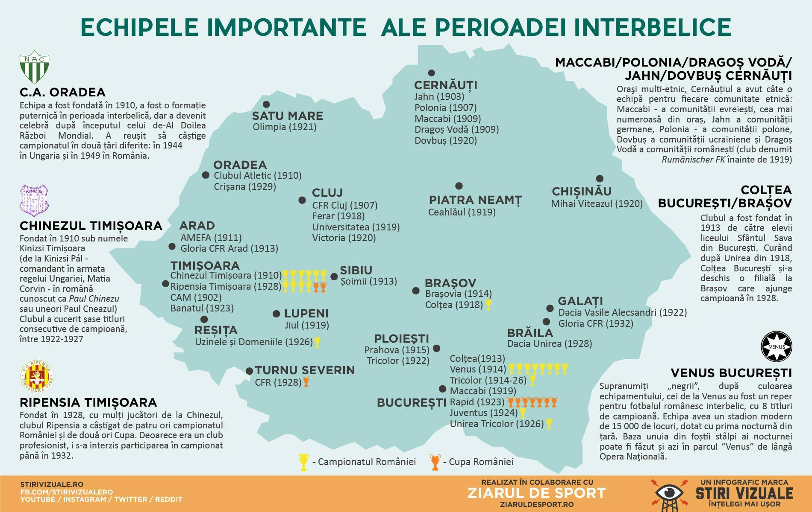
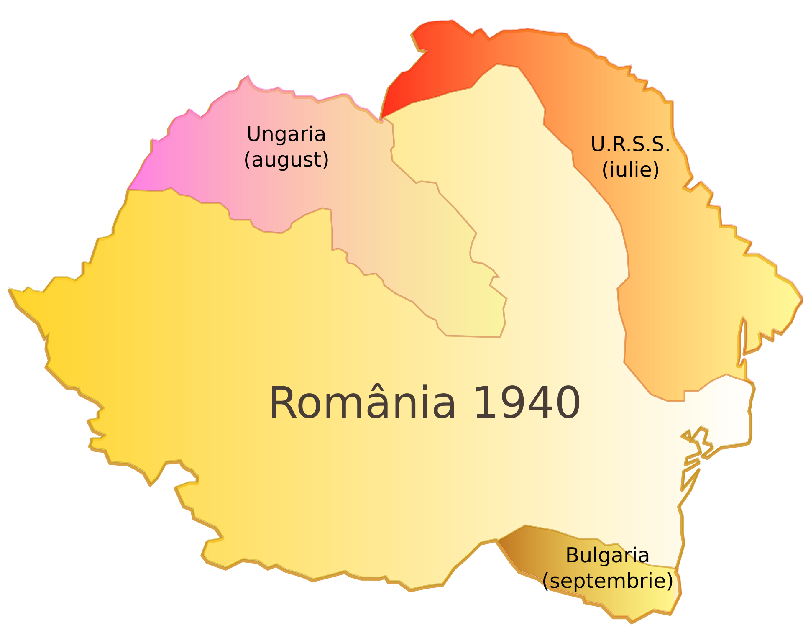

Hey aici e textul ascuns!
Hey aici e textul ascuns!
Hey aici gasesti harti importante ale perioadei interbelice din tara noastra!

Harta Romania 1918

Europa intre razboaie

Regiunile istorice ale tarii

Judetele Romaniei Mari - 71 de județe, 489 de plăși și 8.879 de comune.

Distributia etnica din 1930

Gradul de alfabetizare din 1930

Principalele echipe de fotbal

Pierderile teritoriale din 1940
Hey aici e textul ascuns!
Hey aici gasesti figurile istorice care au modelat Romania interbelica!
Ion I.C. BratianuHey aici e textul ascuns!
Hey aici e textul ascuns!
Hey aici e textul ascuns!